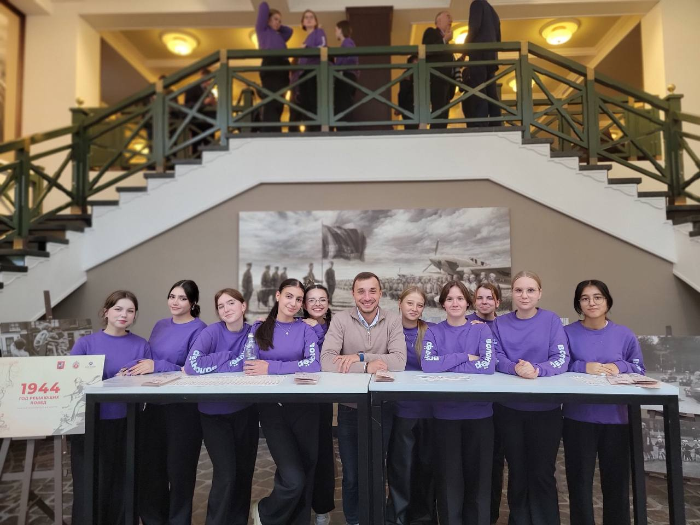
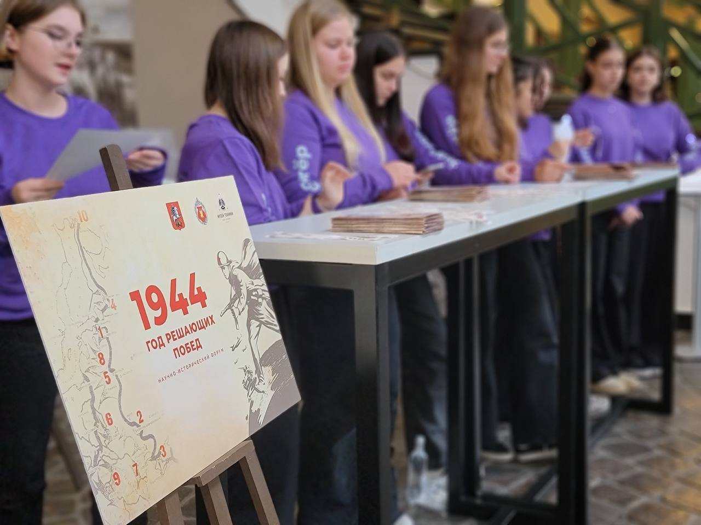

В музее техники Вадима Задорожного будет проходить «Научно-исторический форум, посвящённый крупнейшим наступательным операциям в Великой Отечественной войне».
🧑🧒🧒 Мы вместе с волонтерским корпусом ГБОУ Школа № 2051 будем сопровождать это мероприятие. Наши задачи окажутся самыми разными: мы будем встречать гостей и помогать им сориентироваться, работать на регистрации, обеспечивать работу секций и, конечно, с большим интересом слушать выступления историков и ветеранов.
Ребята отметят, что им будет не только приятно, но и очень познавательно стать частью такого значимого события! Особенно запомнится возможность увидеть уникальную военную технику той эпохи «вживую», что сделает историю по-настоящему осязаемой.
Ну, а я хочу добавить, что актив школы 2051 приглашает всех желающих присоединиться к нам! У нас и правда много интересного: мы не только участвуем в волонтёрских акциях и патриотических проектах, но и сами организуем школьные события, квесты и дискуссионные клубы. Хочешь найти новых друзей, получить полезный опыт и провести время с пользой? Ждём именно тебя!

📍 Место сбора:
[территория школы / школьный двор / центральный вход в школу]
🕘 Время и даты проведения:
[указать]